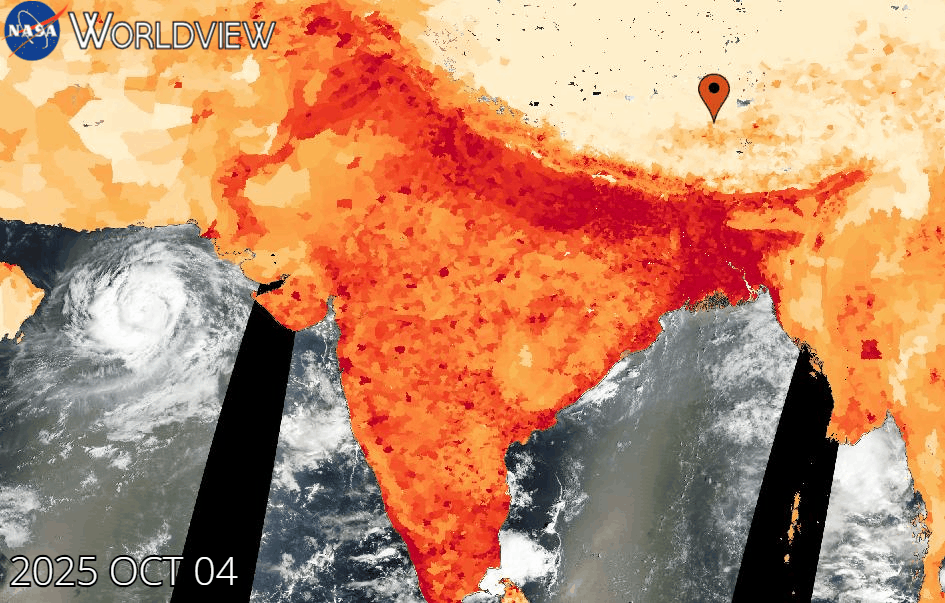

THE TRANSFORMATION SEQUENCE
Understanding the layers of human impact on Earth requires seeing them in sequence. Here's how we'll visualize the changing planet:
The Natural Foundation
We begin with Earth's water bodies in 2025 — rivers, lakes, and coastlines that have shaped civilizations for millennia. This serene blue backdrop represents the natural world before human transformation.
Rising Populations (2007-2025)
Population density maps reveal the explosive growth of human settlements. Watch as bright spots intensify, showing how 8 billion people now crowd into megacities and sprawling suburban zones.
Urban Expansion (2001-2025)
Cities grow outward like living organisms, consuming farmland and forests. Orange and yellow lights spread across continents as concrete, steel, and asphalt replace natural landscapes.
Energy Infrastructure (2015-2025)
Red dots mark nuclear power plants — critical nodes of industrial civilization. These pulsing markers show our dependence on concentrated energy sources and the risks we accept for modern life.
The Complete Footprint
All layers merge to reveal the full extent of human transformation. Population, cities, and energy infrastructure combine to show a planet fundamentally reshaped by human activity.
POPULATION DENSITY EVOLUTION (2007-2025)
Over 18 years, global population surged from 6.7 billion to over 8 billion people. This visualization shows how humanity has concentrated into dense urban clusters, creating unprecedented demand for resources, infrastructure, and energy.
2007 Baseline
.gif)
6.7 billion people
2015 Growth

7.4 billion people
2025 Current
8+ billion people
URBAN DEVELOPMENT (2001-2025)
Urban areas have expanded at an explosive rate, converting millions of acres of natural habitat into built environments. Cities that once had clear boundaries now merge into continuous metropolitan regions.
2001 Urban Extent

2013 Expansion

2025 Maximum

NUCLEAR INFRASTRUCTURE (2015-2025)
Nuclear power plants represent concentrated nodes of energy production and potential risk. Red dots mark facilities that power millions of homes while requiring extreme safety measures and generating long-lived radioactive waste.
2015 Network

2020 Expansion

2025 Current

WATER RESOURCES: THE FOUNDATION
2025 Water Bodies
Rivers, lakes, and coastlines form the foundation of human civilization. Yet as cities expand and populations grow, these vital water resources face unprecedented pressure from pollution, extraction, and climate change.
IMPACT ON YOU & YOUR COMMUNITY
Urban expansion and population growth aren't abstract statistics—they directly affect your daily life, health, and future. Here's how the human footprint impacts you personally:
Housing Crisis
Rapid urbanization drives housing prices beyond reach for many families. As cities expand, commute times increase, green spaces disappear, and affordable housing becomes scarce.
Traffic & Pollution
Urban sprawl creates traffic nightmares and air quality crises. The average commuter wastes 54 hours per year in traffic, breathing polluted air that shortens lifespans.
Urban Heat Islands
Concrete and asphalt absorb and trap heat, making cities 5-7°F hotter than surrounding areas. This intensifies heatwaves, increases energy costs, and threatens vulnerable populations.
Water Scarcity
Growing cities strain water supplies. Aquifers are depleted faster than they can recharge, while pollution contaminates remaining sources. Water conflicts are becoming common.
Loss of Nature
Urban expansion destroys forests, wetlands, and wildlife habitat. Children grow up disconnected from nature, contributing to mental health issues and reduced quality of life.
Energy Demands
Dense populations require massive energy infrastructure. Power grids strain during heat waves, blackouts become common, and dependence on centralized systems creates vulnerability.
THE SCIENCE BEHIND THE TRANSFORMATION
Understanding Exponential Growth
The dramatic changes shown in these visualizations aren't random—they follow predictable patterns driven by exponential population growth, economic development, and technological change.
The Mathematics of Urban Sprawl
Cities don't grow linearly—they expand exponentially. When a city's population doubles, its land area typically increases by 100-150%. This is because:
- Lower-density suburban development consumes more land per person
- Supporting infrastructure (roads, utilities) requires additional space
- Affluent populations demand larger living spaces
- Zoning laws often prevent high-density development
The Ecological Cost
Every square kilometer of urbanization represents:
- Habitat Loss: Forests, grasslands, and wetlands converted to impervious surfaces
- Biodiversity Decline: Local extinction of species unable to adapt to urban environments
- Hydrological Changes: Natural drainage disrupted, increasing flood risk
- Carbon Release: Vegetation cleared, soil carbon oxidized
The Resource Equation
Urban populations consume resources at dramatically higher rates:
COMMUNITY STORIES
Behind the data are real people experiencing the transformation of their communities. These stories illustrate the human dimension of urban growth.
Maria's Story: The Vanishing Farm
Third-Generation Farmer
"My grandparents farmed this land for 60 years. Now we're surrounded by subdivisions. The soil our family cultivated is under concrete. Property taxes rose so high we couldn't afford to keep farming even if buyers weren't offering millions for development. It breaks my heart to see orchards I played in as a child turned into parking lots."
- Maria Rodriguez, Former Farmer
David's Story: The Childhood Forest
Urban Planner
"I became an urban planner because of what happened to the forest where I grew up. It was 200 acres of old growth—our neighborhood's sanctuary. We hiked there, learned about nature, felt connected to something bigger. Then it was sold to developers. Within a year, it was gone. Now it's a shopping center and condos. I work every day trying to prevent that from happening to other communities, but the pressure for development is overwhelming."
- David Kim, Urban Planner
Aisha's Story: The Water Crisis
Public Health Worker
"Our city's rapid growth outpaced infrastructure. The water treatment plant was built for 500,000 people—now we're 1.2 million. During summer, water pressure drops, quality degrades. Low-income neighborhoods suffer most. Children get sick from contaminated water. Meanwhile, new luxury developments go up with private wells. Growth created prosperity for some, but essential services can't keep up."
- Aisha Ahmed, Public Health Worker
SOLUTIONS & SUSTAINABLE PATHS FORWARD
The trajectory of urban growth and land change doesn't have to lead to environmental collapse. Cities can be designed—or redesigned—to work with nature rather than against it.
Urban Planning Innovations
Smart Density
Build up, not out. High-density, mixed-use developments reduce sprawl, preserve natural areas, and create walkable neighborhoods that reduce car dependence and emissions.
Green Infrastructure
Integrate parks, green roofs, urban forests, and permeable surfaces. These cool cities, manage stormwater, support biodiversity, and improve mental health.
Transit-Oriented Development
Build communities around public transportation hubs. This reduces car dependence, cuts emissions, and creates vibrant, connected neighborhoods.
Urban Agriculture
Rooftop gardens, community farms, and vertical agriculture bring food production into cities, reducing transportation emissions and connecting people to their food sources.
What You Can Do
In Your Home & Neighborhood
- Support local businesses to reduce sprawl-inducing big-box development
- Advocate for bike lanes, sidewalks, and pedestrian-friendly streets
- Plant native species to support local ecosystems
- Participate in community planning meetings
- Support conservation easements and land trusts
In Your Community
- Vote for smart growth policies and green infrastructure investments
- Support mixed-use zoning that reduces car dependency
- Advocate for affordable housing near jobs and transit
- Join or start neighborhood conservation groups
- Push for urban growth boundaries to protect surrounding natural areas
In Your Lifestyle
- Choose urban living over suburban sprawl when possible
- Use public transit, bike, or walk instead of driving
- Support local food systems and farmers markets
- Reduce consumption to minimize resource demands
- Share your connection to nature with younger generations
3D VISUALIZATION: THE HUMAN FOOTPRINT
Interactive Earth Model: Layers of Human Impact
Interactive 3D scene showing population density (blue glow), urban development (orange structures), and energy infrastructure (red pulse markers) transforming the planet.
THE PATH FORWARD
The Earth has been fundamentally transformed by human activity. But transformation doesn't have to mean destruction.
The data shows an undeniable reality: humanity's footprint has grown exponentially over the past 25 years. Cities sprawl across landscapes, populations concentrate in megacities, and industrial infrastructure spreads across continents.
Yet within this challenge lies opportunity. Every city being built today, every neighborhood being planned, every transportation system being designed represents a choice. We can choose sprawl or density, car dependence or walkability, environmental destruction or ecological integration.
The most successful cities of the future won't be those that grow fastest or biggest—they'll be those that grow smartest, creating prosperity and quality of life while preserving the natural systems that sustain all life on Earth.
The Choice Is Ours
Every decision we make—where we live, how we travel, what we build, how we plan—shapes the planet's future. The data shows what we've done. Our actions will determine what comes next.